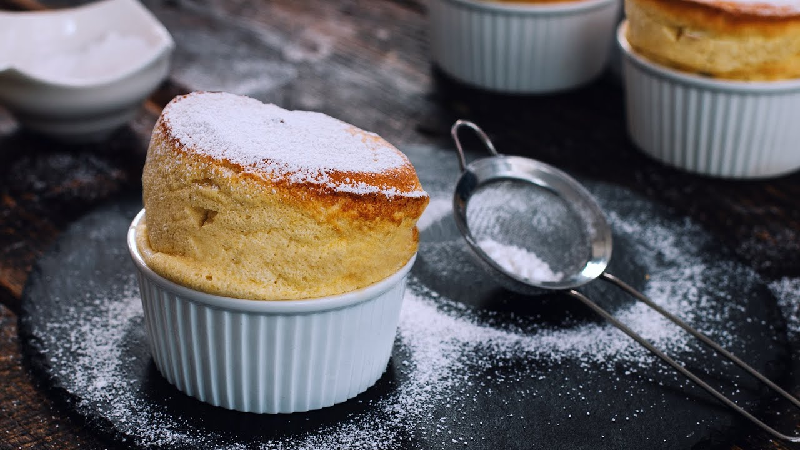
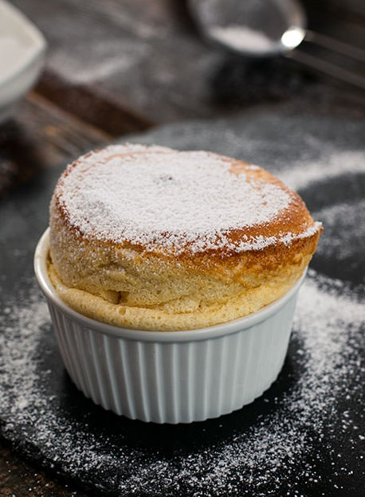

French Souffle Recipe


⌛ 45 Minutes
Description
A souffle is an egg-based dish originating in France in the early eighteenth century, of which the creation is attributed to attributed to master cook Vincent La Chapelle. Depending on the ingredients, it can either be a main dish or a desert, and is usually served on pretty important occasions. Interestingly, the word soufflé is the past participle of the French verb souffler which means "to blow" or "to breathe". It is an extremely popular treat on Valentines Day, and with all that info out of the way, it is time to start cooking!
Ingredients
- 4 large eggs
- 300ml milk
- 5 tbsp flour
- 6tbsp sugar
- 2 tsp vanilla extract
- 1/4 tsp salt
- Pinch of powdered sugar
Steps
- Preheat the oven to 3190C, or 375F, then place a baking sheet on the middle rack in the oven. Grease 4 ramekins of with butter using a brush and making upward strokes, which helps the souffle rise evenly. Coat the bottom and the sides with sugar
- Separate the whites from the yolks and set them aside until they are ready to use.
- In a medium sized saucepan, bring the milk to a simmer.
- In another saucepan mix the yolks with 3 tbsp sugar until they are slightly pale. Add your flour and whisk in order to combine them. Pour about a third of the milk over the egg yolk mixture to temper the yolks, then add the rest of the milk and return to it to the heat. Bring the mizture to a boil, stirring continously for 1-2 minutes until it has thickened.
- Remove it from heat and stir in the vanilla extract. Transfer your mixture to a larger bowl and let it slightly cool off.
- In a separate bowl whip the whites with a pinch of salt until it is foamy. Gradually add the remaining sugar and continue whipping it until stiff peaks form. Then slowly fold the whipped whites into the yolk mixture.
- Divide the mixture evenly into the prepared ramekins. Place the ramekins onto the preheated baking sheet and bake them for 25-30 minute until they are golden and puffed.
- Dust them with powdered sugar and serve immediately. Enjoy!